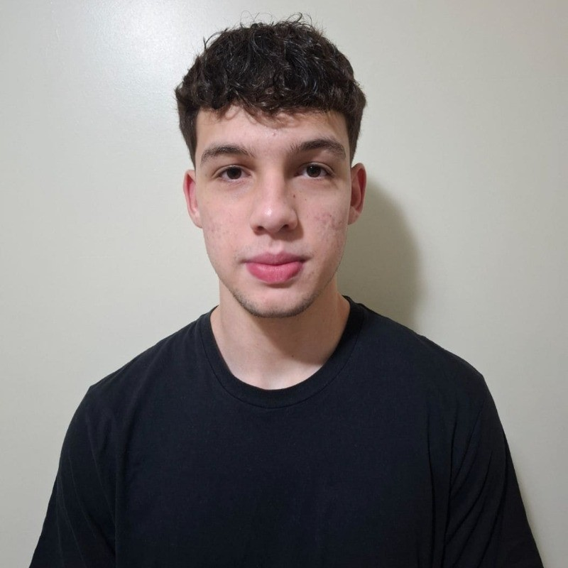

Projetos

Projetos em desenvolvimento
Atualmente estou desenvolvendo meus conhecimentos na área de tecnologia e pretendo adicionar projetos acadêmicos e pessoais ao meu portfólio conforme forem concluídos.
Em busca de aprender, evoluir e construir minha carreira na área de tecnologia.
Conheça meu perfil
Sou um estudante universitário de 19 anos, cursando Análise e Desenvolvimento de Sistemas, com experiência como freelancer na área de expedição e auxiliar administrativo na Villares Metals.
Busco uma oportunidade para aprender novas habilidades e contribuir com responsabilidade, organização e dedicação. Tenho facilidade em aprender e estou sempre disposto a melhorar. Acredito que posso agregar com minha vontade de evoluir e meu comprometimento com os objetivos propostos.
UNISOCIESC — Em andamento
Garden Plan
Villares Metals
Atualmente, não possuo certificados relevantes para apresentar.
Atualmente estou desenvolvendo meus conhecimentos na área de tecnologia e pretendo adicionar projetos acadêmicos e pessoais ao meu portfólio conforme forem concluídos.
vinicavallioliveira@gmail.com